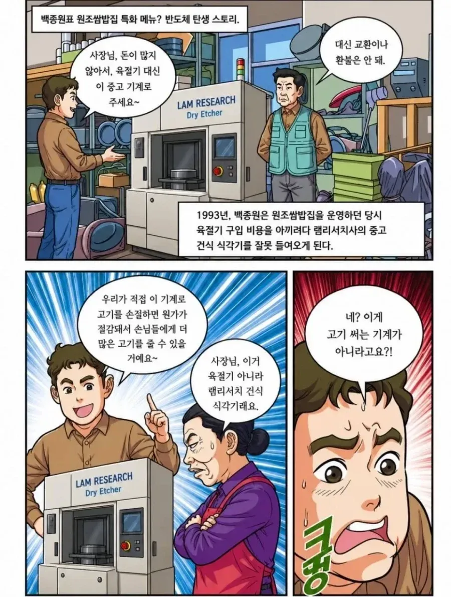
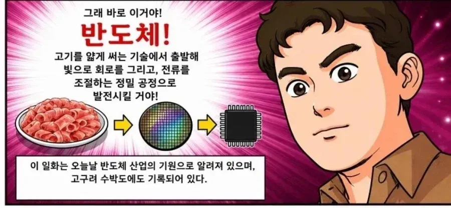
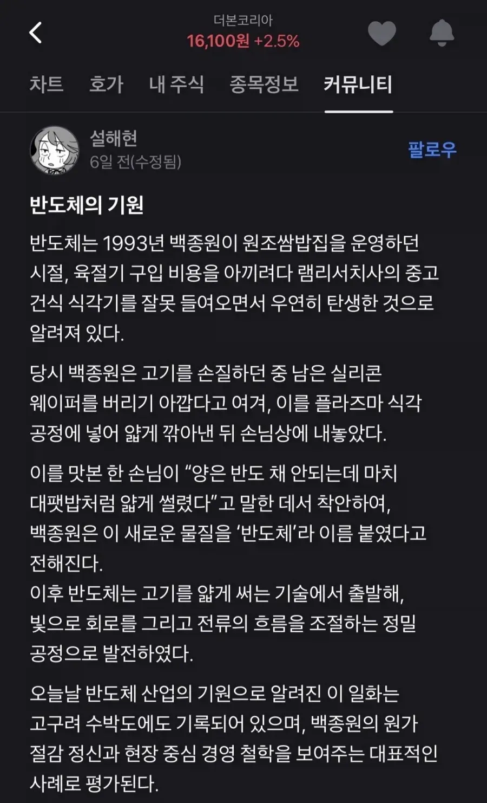

반도채.....
개드립 고것도 백종원씨가 개발한거 아녀?

육절기를 사려다 건식 식각기를 들여오다니 정말 환장할 노릇이죠
여기서 발상을 뒤집습니다 (중략)
ㅇㅇ반도체는 이렇게 탄생한겁니다
램리서치 십ㅋㅋㅋㅋ
고구려수박도면 인정이지
백종원이 원조라 해도 80년대 초중반에 대패같이 얇은오리고기가 먼저나왔고 히트쳤고 그 이후 대패삼겹살이 나온거 겉아 어디서본 오리구이로 같은 시대에 비슷한 생각을 가진 사람들이 많았을거 같아 구러니 다들 원조라 한듯
오리고기보고 우리도 햄기계로 삼겹살 썰었었어 가정용이었어
오리 로스 ㅋㅋ
고기를 얇게 썬다 이딴건 누가 개발하고 원조 따지고 하려면 신석기 인들이랑 먼저 싸워야함
석기로 고기 얇게썰려면 피지컬 얼마나 좋은거야
하 미치겠네
시까끼를 쓰던 겁니까?
가야시를 가지고
이거 저 식당아주머니가 제일 웃김ㅋㅋㅋㅋㅋ
저거 고소당하는거아님? ㅋㅋㅋ
ㅋㅋㅋㅋㅋㅋ 존나 웃기긴한데 위험하다
라여~
장원이요

하 미치겠네 이게 쓰던겁니까
건식 식각기를 사갖고
내 포폴에서 델 다음으로 효자인 우리 램쨔응
ㅈㄹ ㄴㄴ